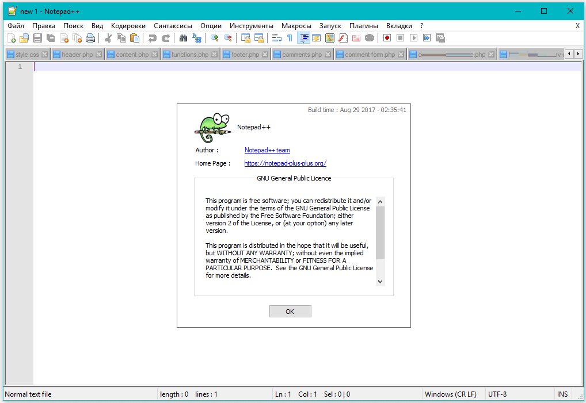

Текстовый редактор, предназначенный для программистов и всех тех, кого не устраивает скромная функциональность входящего в состав Windows Блокнота.
Скачать Notepad++ бесплатно на русском языке можно по прямой ссылке c официального сайта разработчика (https://soft-file.ru/notepad/).
У редактора есть масса существенных преимуществ перед наиболее известными приложениями, такими как, например, Microsoft FrontPage или Adobe Dreamweaver.
Внешний вид редактора представлен на рисунке: 